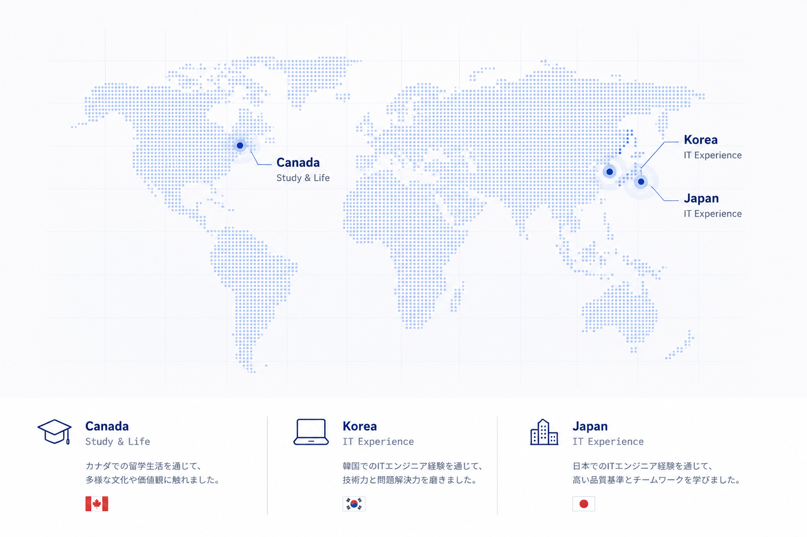
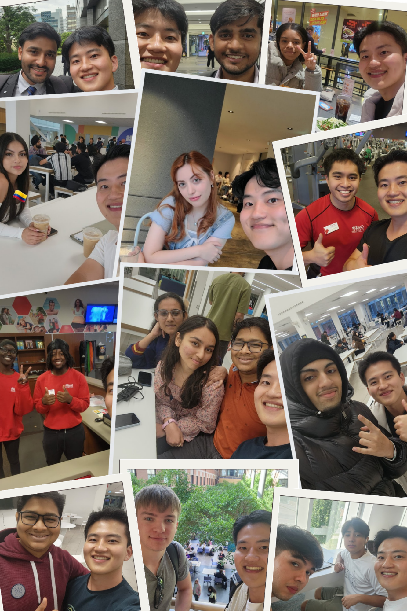

01 / MY BACKGROUND
これまでの経験を活かせる仕事
英語通訳翻訳と日本言語文化を学び、カナダでの留学、日本での実務を経験してきました。
IT分野では、Web開発、システム運用、クラウドマイグレーションへと経験を広げてきました。
IT × 語学 × 海外経験を活かせることに、この仕事の大きな魅力を感じています。
- IT Experience
- English / Japanese
- Canada / Japan
- Cross-Cultural Experience
PROFILE
ITシステムから、世界をつなぐインフラへ。
韓国出身のITエンジニアです。
カナダでの留学・海外経験を経て、韓国と日本で実務経験を積み、
英語と日本語でのコミュニケーションを活かして仕事を進めてきました。
EXPERIENCE
金融情報サービス企業の企業IR・Webサイト構築プロジェクトに参加し、HTML / CSS / JavaScript による UI 実装とレスポンシブ対応を担当しました。
画面のコーディング・保守に加え、Git での構成管理とチーム開発プロセスを経験しました。
LIVE
自治体の健康保険システム標準化プロジェクトで、Java アプリの開発・デプロイと環境構築、Oracle DB でのデータ照会・障害原因分析を担当しました。
アプリログの収集・分析、バッチ実行検証、アカウント・権限管理、帳票機能のデバッグにも取り組み、運用・保守と関係者対応を通じて実システムの動き方を学びました。
オンプレミス基盤の金融システムを Google Cloud へ移行するプロジェクトに参画し、クラウドバッチ実行アーキテクチャの技術検証と JP1/AJS3 からの移行を担当しました。
Shell Script 作成、テスト・検証、実行モニタリング／ログ管理体制の検討、複数チームとの情報共有・調整を行いました。
MOTIVATION
これまでの経験を活かしながら、
グローバルな環境で新たな専門性を築きたいです。
01 / MY BACKGROUND
英語通訳翻訳と日本言語文化を学び、カナダでの留学、日本での実務を経験してきました。
IT分野では、Web開発、システム運用、クラウドマイグレーションへと経験を広げてきました。
IT × 語学 × 海外経験を活かせることに、この仕事の大きな魅力を感じています。
02 / SPECIALIZATION
クラウド業務を経験する中で、デジタルサービスを支えるデータセンターやネットワークなどの物理インフラにも関心を持つようになりました。
特に、国や大陸をつなぐ海底ケーブルと、複数の専門領域が組み合わされる Route Engineering に強く惹かれています。
新しい知識を学びながら、長期的に専門性を深めていきたいと考えています。
Currently Exploring
03 / GLOBAL CAREER
一つの国に限定されず、さまざまな国や文化の中で働くことに魅力を感じています。
海外の顧客やエンジニアと英語でコミュニケーションを取り、海外出張を含むグローバルなプロジェクトを通じて、さらに国際的な経験を広げていきたいと考えています。
04 / FUTURE VISION
これまで培ってきたIT経験、語学力、異文化環境への適応力を土台として、海底ケーブル分野の専門知識を一つずつ身につけていきたいと考えています。
長期的に経験を積み重ね、技術とグローバルコミュニケーションの両面で信頼されるスペシャリストを目指します。
STRENGTHS
多様な文化・価値観の中で培ったコミュニケーション力と適応力
カナダ・日本・韓国での学びと実務経験、そして世界中の仲間との出会いが、
私の視野を広げ、グローバルに挑戦し続ける原動力になっています。


英語と日本語を使い、海外の顧客やエンジニアと、仕事や日常の中でコミュニケーションを取ってきました。
一つの国に限定されず、さまざまな国や文化の中で働くことに魅力を感じています。カナダ・日本での生活と実務がその土台です。
Web開発、システム運用、クラウド移行を経験する中で、サービスを支えるデータセンターやネットワークなどのインフラにも関心を広げてきました。
未知の技術領域に適応してきた経験を土台に、海底ケーブルという新しい専門分野にも意欲的に取り組み、着実に基礎を身につけていきます。
FUTURE
01 LEARN
海洋調査、GIS、海底地形、ケーブルルート設計など、
業務に必要な基礎知識を着実に身につけます。
02 EXPERIENCE
海外の顧客・関係者との協働や実際のプロジェクトを通じて、
ルート設計・評価・調整に必要な実践力を高めます。
03 SPECIALIZE
技術・現場・グローバルコミュニケーションの経験を積み重ね、
海底ケーブルプロジェクトを長期的に支えられる
専門性の高いエンジニアを目指します。
Long-Term Vision
技術と世界をつなぐ、海底ケーブルの専門家へ。
IT分野で培った経験と語学力を活かしながら、
海底ケーブルという新たな専門領域で経験を積み重ね、
将来的にはグローバルなプロジェクトを担えるエンジニアを目指します。